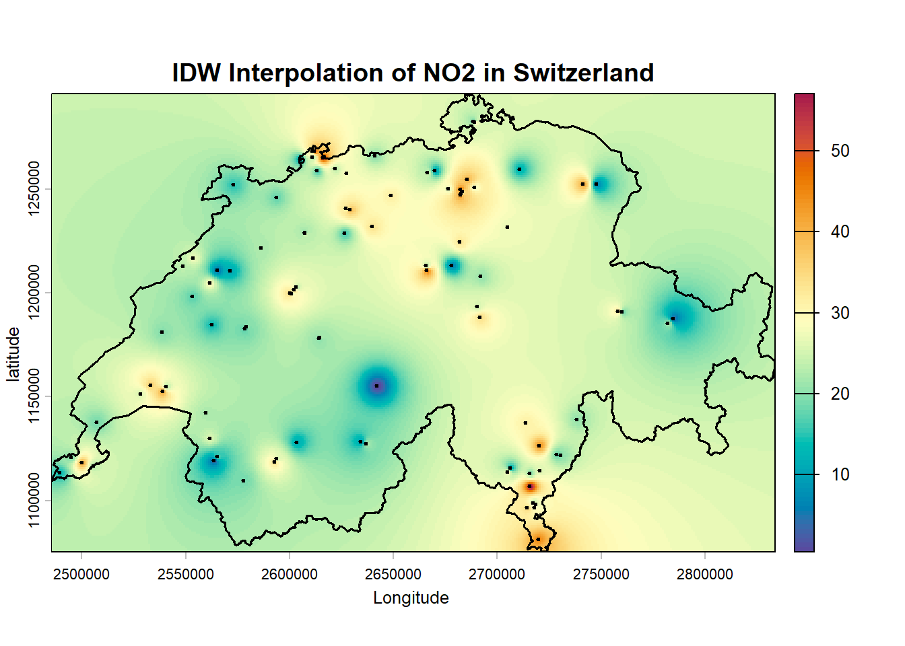
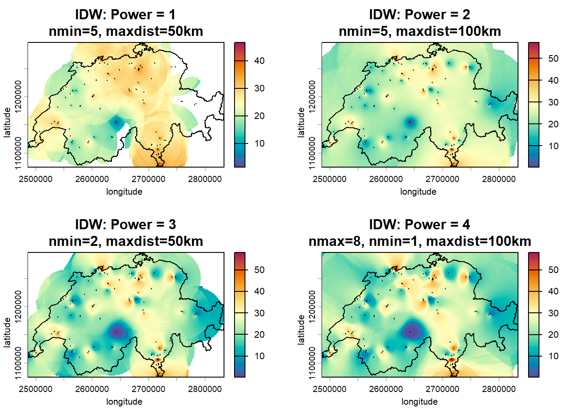
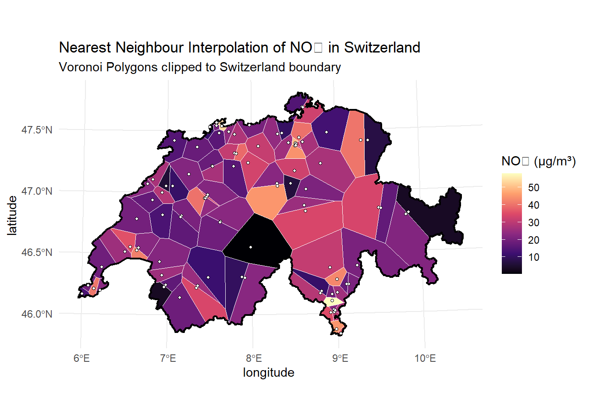
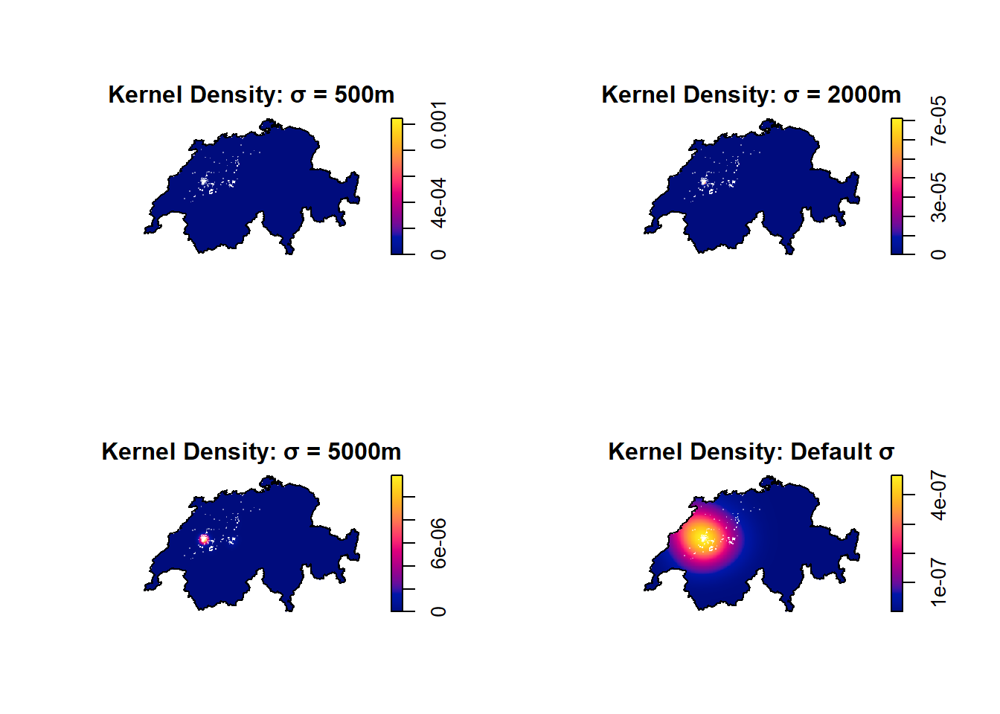
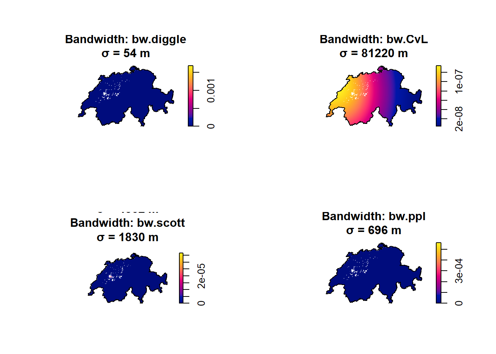
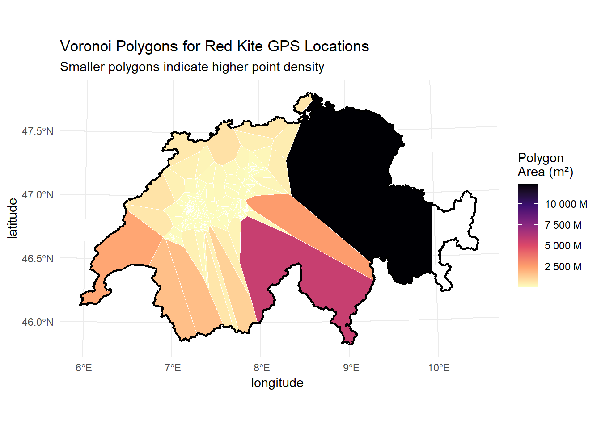

library(sf)
library(gstat)
library(terra)
library(ggplot2)
library(scales)
library(spatstat)
airquality <- read_sf("../data/luftqualitaet.gpkg")
rotmilan <- read_sf("../data/rotmilan.gpkg")
switzerland <- read_sf("../data/schweiz.gpkg")Interpolation and Density Estimation Solutions
Solution for Interpolation and Density Estimation
In this document, I solve the task for Interpolation and Density Estimation of the course Spatiotemporal Datascience.
Interpolation
Exercise 1: IDW (Inverse Distance Weighting)
IDW interpolates values at unknown locations based on the weighted average of nearby known values. The weight decreases with distance according to the inverse distance power (idp).
# Create grid for interpolation (based on Switzerland boundary)
grid <- st_make_grid(switzerland, cellsize = 1000, what = "centers") |>
st_as_sf()
# Basic IDW interpolation
idw_basic <- gstat::idw(
formula = value ~ 1,
locations = airquality,
newdata = grid
)[inverse distance weighted interpolation]# Convert to raster
raster_template <- rast(ext(switzerland), resolution = 1000, crs = crs(switzerland))
idw_raster <- rasterize(idw_basic, raster_template, field = "var1.pred")
# Visualize
plot(idw_raster,
main = "IDW Interpolation of NO2 in Switzerland",
xlab = "Longitude ",
ylab = "latitude ",
col = hcl.colors(100, "Spectral", rev = TRUE))
plot(st_geometry(switzerland), add = TRUE, border = "black", lwd = 1.5)
plot(st_geometry(airquality), add = TRUE, pch = 20, cex = 0.5, col = "black")
Experimenting with parameters
We test different combinations of IDW parameters:
| Parameter | Description |
|---|---|
idp |
Inverse distance power - higher values give more weight to nearby points |
nmin |
Minimum number of points required for interpolation |
nmax |
Maximum number of points used for interpolation |
maxdist |
Maximum search radius (in meters) |
# IDW with different idp values
idw_idp1 <- gstat::idw(value ~ 1, airquality, grid, idp = 1, nmin = 5, maxdist = 50000)[inverse distance weighted interpolation]idw_idp2 <- gstat::idw(value ~ 1, airquality, grid, idp = 2, nmin = 5, maxdist = 100000)[inverse distance weighted interpolation]idw_idp3 <- gstat::idw(value ~ 1, airquality, grid, idp = 3, nmin = 2, maxdist = 50000)[inverse distance weighted interpolation]# IDW with maxdist and nmax
idw_constrained <- gstat::idw(value ~ 1, airquality, grid, maxdist = 100000, nmax = 8, nmin=1, idp = 4)[inverse distance weighted interpolation]# Convert to rasters
rast_idp1 <- rasterize(idw_idp1, raster_template, field = "var1.pred")
rast_idp2 <- rasterize(idw_idp2, raster_template, field = "var1.pred")
rast_idp3 <- rasterize(idw_idp3, raster_template, field = "var1.pred")
rast_constrained <- rasterize(idw_constrained, raster_template, field = "var1.pred")
# Visualize comparison
par(mfrow = c(2, 2), mar = c(4, 4, 3, 2))
plot(rast_idp1,
main = "IDW: Power = 1\nnmin=5, maxdist=50km",
xlab = "longitude ", ylab = "latitude ",
col = hcl.colors(100, "Spectral", rev = TRUE))
plot(st_geometry(switzerland), add = TRUE, border = "black")
plot(st_geometry(airquality), add = TRUE, pch = 20, cex = 0.3)
plot(rast_idp2,
main = "IDW: Power = 2\nnmin=5, maxdist=100km",
xlab = "longitude ", ylab = "latitude ",
col = hcl.colors(100, "Spectral", rev = TRUE))
plot(st_geometry(switzerland), add = TRUE, border = "black")
plot(st_geometry(airquality), add = TRUE, pch = 20, cex = 0.3)
plot(rast_idp3,
main = "IDW: Power = 3\nnmin=2, maxdist=50km",
xlab = "longitude ", ylab = "latitude ",
col = hcl.colors(100, "Spectral", rev = TRUE))
plot(st_geometry(switzerland), add = TRUE, border = "black")
plot(st_geometry(airquality), add = TRUE, pch = 20, cex = 0.3)
plot(rast_constrained,
main = "IDW: Power = 4\nnmax=8, nmin=1, maxdist=100km",
xlab = "longitude", ylab = "latitude",
col = hcl.colors(100, "Spectral", rev = TRUE))
plot(st_geometry(switzerland), add = TRUE, border = "black")
plot(st_geometry(airquality), add = TRUE, pch = 20, cex = 0.3)
par(mfrow = c(1, 1))Exercise 2: Nearest Neighbour (Voronoi)
Voronoi polygons (also called Thiessen polygons) assign to each location the value of the nearest measurement station. Each polygon contains all points closer to one station than to any other.
# Create voronoi polygons
voronoi <- airquality |>
st_geometry() |>
st_union() |>
st_voronoi() |>
st_collection_extract("POLYGON") |>
st_as_sf()
# Clip to Switzerland boundary
voronoi_clipped <- st_intersection(voronoi, switzerland)Warning: attribute variables are assumed to be spatially constant throughout
all geometries# Join values to polygons
voronoi_with_data <- st_join(voronoi_clipped, airquality)
# Visualize
ggplot() +
geom_sf(data = voronoi_with_data, aes(fill = value), color = "white", linewidth = 0.3) +
geom_sf(data = switzerland, fill = NA, color = "black", linewidth = 0.8) +
geom_sf(data = airquality, size = 1, shape = 21, fill = "white", color = "black") +
scale_fill_viridis_c(name = "NO₂ (µg/m³)", option = "magma") +
labs(
title = "Nearest Neighbour Interpolation of NO₂ in Switzerland",
subtitle = "Voronoi Polygons clipped to Switzerland boundary",
x = "longitude ",
y = "latitude "
) +
theme_minimal()
Discussion: Interpolation
The application of IDW interpolation with varying parameters revealed clear limitations of the method depending on the chosen values. Setting a low distance weight (idp = 1) combined with a maxdist of 50km and nmin = 5 resulted in visible edges and cut-offs, as not all interpolation points could satisfy the strict neighborhood criteria. The default setting (idp = 2) produced a smoother overall gradient but suffered from a pronounced “bullseye” effect around the monitoring stations, where local values dominated heavily. Higher idp values (3 and 4) mitigated the sharp edges but created slightly larger, blockier artifacts around the stations rather than perfectly smooth transitions.
A major critical observation is the spatial plausibility of the interpolation, especially in the Alps. IDW is a purely mathematical, distance-based algorithm that ignores topography and physical barriers. Since NO₂ is primarily driven by local traffic and combustion, interpolating high values from valley stations evenly across vast, unpopulated mountain ranges is highly unrealistic.
In contrast, the Nearest Neighbour (Voronoi) approach offers a significant conceptual advantage. While less visually smooth, it acts as a transparent indicator of data reliability: small polygons in the flatlands indicate high station density and higher confidence, whereas bigger polygons in the Alps instantly highlight areas of high uncertainty due to data scarcity. Furthermore, Voronoi polygons preserve the exact measured values without mathematical dilution, avoiding the false sense of precision that IDW’s smooth gradients might suggest.
Density Estimation
Exercise 1: Kernel Density Estimation
# Convert to ppp object with proper window
swiss_window <- as.owin(switzerland)
rotmilan_coords <- st_coordinates(rotmilan)
rotmilan_ppp <- ppp(rotmilan_coords[,1], rotmilan_coords[,2], window = swiss_window)Warning: data contain duplicated points# Basic kernel density with default sigma
density_default <- density(rotmilan_ppp, eps = 1000)Testing different sigma values
# Manual sigma values
density_sigma500 <- density(rotmilan_ppp, sigma = 500, eps = 1000)
density_sigma2000 <- density(rotmilan_ppp, sigma = 2000, eps = 1000)
density_sigma5000 <- density(rotmilan_ppp, sigma = 5000, eps = 1000)
# Visualize
par(mfrow = c(2, 2), mar = c(4, 4, 3, 2))
plot(density_sigma500,
main = "Kernel Density: σ = 500m",
xlab = "longitude", ylab = "latitude")
plot(st_geometry(switzerland), add = TRUE, border = "black")
plot(st_geometry(rotmilan), add = TRUE, pch = ".", col = adjustcolor("white", alpha.f = 0.5))
plot(density_sigma2000,
main = "Kernel Density: σ = 2000m",
xlab = "longitude", ylab = "latitude")
plot(st_geometry(switzerland), add = TRUE, border = "black")
plot(st_geometry(rotmilan), add = TRUE, pch = ".", col = adjustcolor("white", alpha.f = 0.5))
plot(density_sigma5000,
main = "Kernel Density: σ = 5000m",
xlab = "longitude", ylab = "latitude")
plot(st_geometry(switzerland), add = TRUE, border = "black")
plot(st_geometry(rotmilan), add = TRUE, pch = ".", col = adjustcolor("white", alpha.f = 0.5))
plot(density_default,
main = "Kernel Density: Default σ",
xlab = "longitude ", ylab = "latitude ")
plot(st_geometry(switzerland), add = TRUE, border = "black")
plot(st_geometry(rotmilan), add = TRUE, pch = ".", col = adjustcolor("white", alpha.f = 0.5))
par(mfrow = c(1, 1))Automatic bandwidth selection
# Different methods for choosing sigma
sigma_diggle <- bw.diggle(rotmilan_ppp)
sigma_cvl <- bw.CvL(rotmilan_ppp)
sigma_scott <- bw.scott(rotmilan_ppp)
sigma_ppl <- bw.ppl(rotmilan_ppp)
cat("Bandwidth selection results:\n")Bandwidth selection results:cat("bw.diggle:", sigma_diggle, "\n")bw.diggle: 53.97886 cat("bw.CvL:", sigma_cvl, "\n")bw.CvL: 81219.62 cat("bw.scott:", sigma_scott, "\n")bw.scott: 4302.234 1829.652 cat("bw.ppl:", sigma_ppl, "\n")bw.ppl: 695.7054 # Apply different bandwidth methods
density_diggle <- density(rotmilan_ppp, sigma = sigma_diggle, eps = 1000)
density_cvl <- density(rotmilan_ppp, sigma = sigma_cvl, eps = 1000)
density_scott <- density(rotmilan_ppp, sigma = sigma_scott, eps = 1000)
density_ppl <- density(rotmilan_ppp, sigma = sigma_ppl, eps = 1000)
# Visualize
par(mfrow = c(2, 2), mar = c(4, 4, 3, 2))
plot(density_diggle,
main = paste("Bandwidth: bw.diggle\nσ =", round(sigma_diggle), "m"),
xlab = "longitude ", ylab = "latitude")
plot(st_geometry(switzerland), add = TRUE, border = "black")
plot(st_geometry(rotmilan), add = TRUE, pch = ".", col = adjustcolor("white", alpha.f = 0.5))
plot(density_cvl,
main = paste("Bandwidth: bw.CvL\nσ =", round(sigma_cvl), "m"),
xlab = "longitude ", ylab = "latitude ")
plot(st_geometry(switzerland), add = TRUE, border = "black")
plot(st_geometry(rotmilan), add = TRUE, pch = ".", col = adjustcolor("white", alpha.f = 0.5))
plot(density_scott,
main = paste("Bandwidth: bw.scott\nσ =", c(round(sigma_scott[1]), round(sigma_scott[2])), "m"),
xlab = "longitude ", ylab = "latitude")
plot(st_geometry(switzerland), add = TRUE, border = "black")
plot(st_geometry(rotmilan), add = TRUE, pch = ".", col = adjustcolor("white", alpha.f = 0.5))
plot(density_ppl,
main = paste("Bandwidth: bw.ppl\nσ =", round(sigma_ppl), "m"),
xlab = "longitude ", ylab = "latitude ")
plot(st_geometry(switzerland), add = TRUE, border = "black")
plot(st_geometry(rotmilan), add = TRUE, pch = ".", col = adjustcolor("white", alpha.f = 0.5))
par(mfrow = c(1, 1))Exercise 2: Voronoi (Thiessen Polygons)
# Create voronoi polygons for rotmilan data
voronoi_rotmilan <- rotmilan |>
st_geometry() |>
st_union() |>
st_voronoi() |>
st_collection_extract("POLYGON") |>
st_as_sf()
# Clip to Switzerland boundary
voronoi_rotmilan_clipped <- st_intersection(voronoi_rotmilan, switzerland)Warning: attribute variables are assumed to be spatially constant throughout
all geometries# Calculate area of each polygon (as density proxy)
voronoi_rotmilan_clipped$area <- st_area(voronoi_rotmilan_clipped)
# Visualize
ggplot() +
geom_sf(data = voronoi_rotmilan_clipped, aes(fill = as.numeric(area)), color = "white", linewidth = 0.2) +
geom_sf(data = switzerland, fill = NA, color = "black", linewidth = 0.8) +
scale_fill_viridis_c(
name = "Polygon\nArea (m²)",
option = "magma",
direction = -1,
labels = scales::label_number(scale = 1e-6, suffix = " M")
) +
labs(
title = "Voronoi Polygons for Red Kite GPS Locations",
subtitle = "Smaller polygons indicate higher point density",
x = "longitude ",
y = "latitude"
) +
theme_minimal()
Discussion: Density Estimation
The Kernel Density Estimation (KDE) highlights a common challenge when analyzing high-resolution animal tracking data. Across most automated bandwidth selection methods, the resulting density maps visually emphasize only a single, very concentrated location. This is likely due to the bird’s stationary behavior (e.g., roosting or nesting), creating an extreme accumulation of GPS points in one specific micro-location.
Because the data density at this specific site is astronomically high compared to the rest of the country, the visualization scale is heavily skewed. Methods calculating small bandwidths, such as bw.diggle (sigma ≈ 54m) and bw.ppl (sigma ≈ 696m), severely undersmooth the data. They accurately pinpoint the exact roosting location but fail to reveal any broader movement patterns or home ranges. On the other extreme, bw.CvL (sigma ≈ 81km) heavily oversmooths the data, creating a massive, uninformative density blob that covers regions the bird may never have visited.
For this specific dataset, bw.scott (sigma ≈ 4.3km / 1.8km) provided somewhat of a meaningful result. The resulting oval shape visualizes the actual habitat utilization and general movement range of the red kite rather than just highlighting its primary resting spot. But still, it seems too small to realy capture the true density of the birds locations.
The default sigma could actually capture the general area of activity by covering more or less the exact area and may be the best option for this dataset.
Using Voronoi polygon areas as a density proxy effectively highlights the core habitat in western Switzerland through dense clusters of small polygons, while sparsely populated margins naturally result in large polygons. However, a critical limitation of this purely geometric method is the creation of long, narrow polygons. These shapes can mathematically indicate a high density due to their small total area, while simultaneously stretching into ecologically unsuitable regions that the red kite would realistically never visit, making the visualization potentially misleading for interpreting actual habitat use.